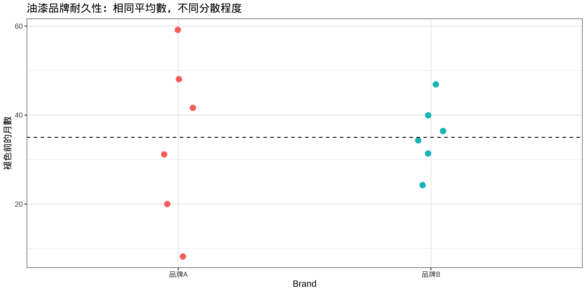
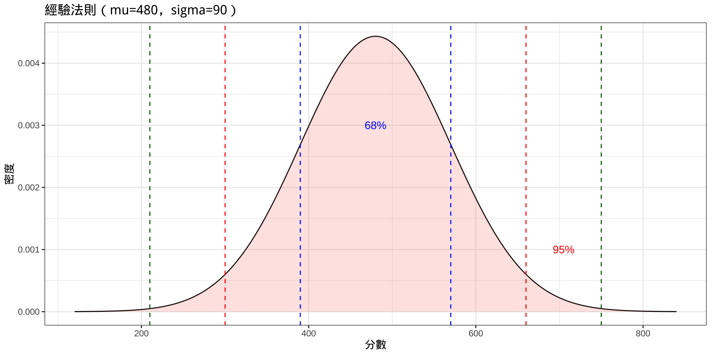
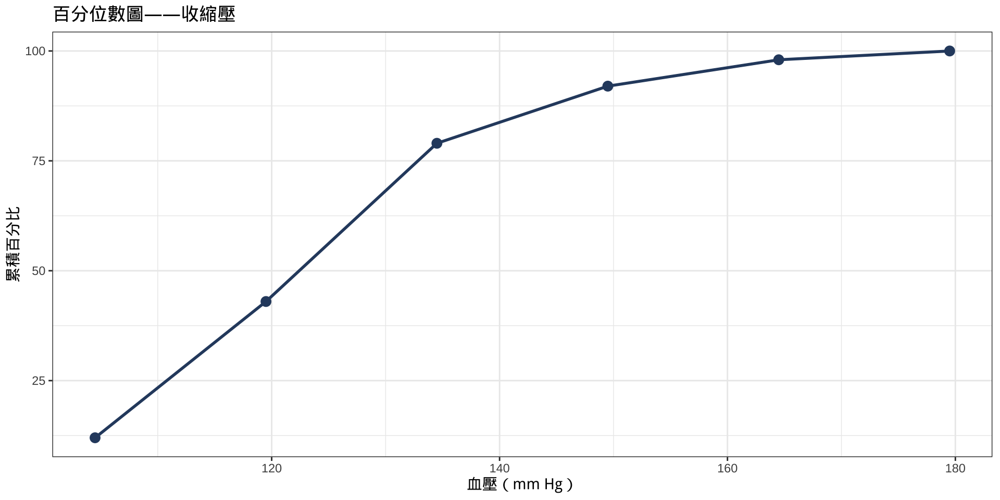
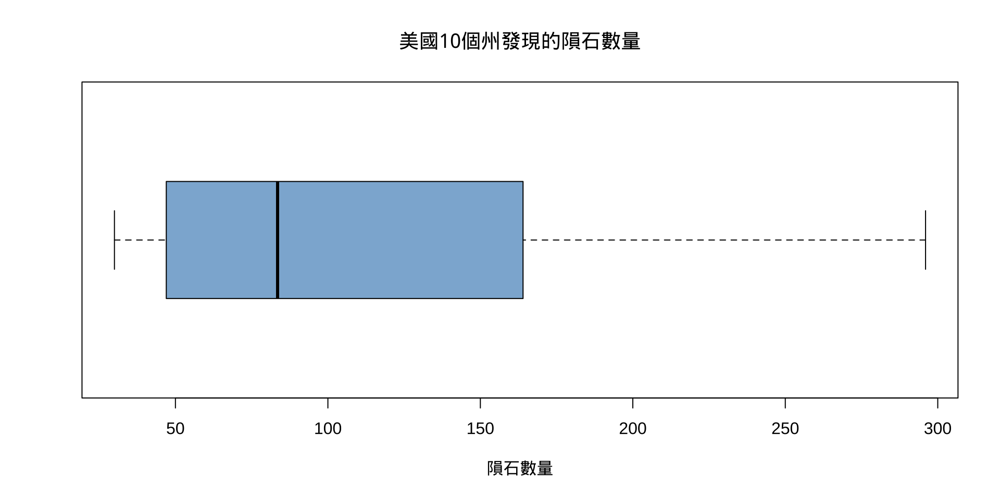
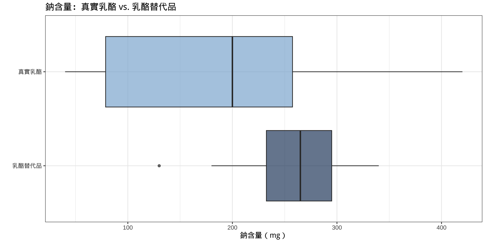

數值總和： 169 數值個數： 6 平均數： 28.16667 第3章：資料描述
實踐大學
2026-07-20
第3章發展用於數值描述資料集的工具——其中心位置、離散程度，以及個別數值的相對位置。
| 節次 | 主題 |
|---|---|
| 3-1 | 集中趨勢的測量：平均數、中位數、眾數、中距 |
| 3-2 | 變異的測量：全距、變異數、標準差、變異係數、柴比雪夫定理、經驗法則 |
| 3-3 | 位置的測量：z分數、百分位數、四分位數、離群值 |
| 3-4 | 探索性資料分析：五數摘要與箱形圖 |
集中趨勢的測量是單一數值，用於摘要資料集的中心或「典型」值。集中趨勢統計量無需檢視每一個別觀測值，而是提供資料聚集位置的簡潔概觀。
四種最廣泛使用的測量為：
關鍵符號
| 符號 | 含義 |
|---|---|
| \bar{X} | 樣本平均數 |
| \mu | 母體平均數 |
| n | 樣本大小 |
| N | 母體大小 |
平均數是將所有資料值加總後除以觀測值個數計算而得。它是最常被報告的中心量數。
平均數公式
樣本平均數： \bar{X} = \frac{\Sigma X}{n}
母體平均數： \mu = \frac{\Sigma X}{N}
其中 \Sigma X 為所有資料值的總和，n（或 N）為數值個數。
四捨五入規則
將平均數四捨五入至比原始資料多一位小數。
每年休假天數
一項針對六個國家的調查發現，勞工每年獲得的帶薪假天數如下。求平均數。
天數： 13, 15, 26, 36, 37, 42
醫院感染
以下為某樣本醫院一年內報告的院內感染次數。求平均數。
數值： 62, 58, 71, 70, 69, 58, 51, 64, 66, 80
當原始資料不可得，僅有次數分配時，使用各組的組中點來近似平均數。
公式——分組資料的平均數
\bar{X} = \frac{\Sigma f \cdot X_m}{n}
其中 f = 組次數，X_m = 組中點，n = \Sigma f。
每週跑步英里數（分組平均數）
20名跑者記錄了一週內跑步的英里數。使用下方次數分配求平均數。
| 組別 | 次數 |
|---|---|
| 5.5–10.5 | 1 |
| 10.5–15.5 | 2 |
| 15.5–20.5 | 3 |
| 20.5–25.5 | 5 |
| 25.5–30.5 | 4 |
| 30.5–35.5 | 3 |
| 35.5–40.5 | 2 |
解題
解題
| 組中點（Xm） | 次數（f） | f · Xm |
|---|---|---|
| 8 | 1 | 8 |
| 13 | 2 | 26 |
| 18 | 3 | 54 |
| 23 | 5 | 115 |
| 28 | 4 | 112 |
| 33 | 3 | 99 |
| 38 | 2 | 76 |
中位數是將排序資料集一分為二的中間值。它不受極端值影響。
求中位數
旅館客房數
以下為市中心7家旅館的客房數。求中位數。
客房數： 713, 300, 618, 595, 311, 401, 292
國家公園門票費用（偶數n）
以下為隨機抽樣國家公園的入場費（元）：25, 10, 8, 15, 5, 12, 14, 3。求中位數。
解題
R 程式
排序後： 3 5 8 10 12 14 15 25 n = 8 （偶數）→ 第 4 與第 5 位置的平均值中位數： 11 有8個值（偶數），中位數為排序後第4與第5個值的平均：\frac{10+12}{2} = $11。
問題（範例 3-6 & 3-7——龍捲風 & 氣喘病例）
近年美國12個州報告的龍捲風次數： 188, 967, 990, 1133, 630, 604, 294, 584, 276, 250, 451, 810
10個城市因氣喘就診急診的次數： 345, 243, 111, 144, 280, 300, 213, 201, 403, 201
龍捲風——排序後： 188, 250, 276, 294, 451, 584, 604, 630, 810, 967, 990, 1133 龍捲風中位數： 594 氣喘——排序後： 111, 144, 201, 201, 213, 243, 280, 300, 345, 403 氣喘中位數： 228 雜誌（從分配中求中位數）
6家隨機選取的書店報告每週銷售的雜誌數：3, 7, 8, 3, 1, 3。求中位數。
眾數是資料集中出現最頻繁的值。與平均數和中位數不同，眾數可用於量化和質性資料。
眾數的關鍵特性
NFL簽約獎金
以下為某樣本NFL球員的簽約獎金（百萬美元）。求眾數。
數值： 18, 14, 10, 10, 10, 7, 7, 3, 2, 2, 2, 8
問題（範例 3-10 & 3-11——無眾數 & 雙峰）
5個城市的銀行分行數：17, 23, 25, 3, 42——每個值均只出現一次 → 無眾數。
美國15年間的核子反應爐執照數： 104, 104, 104, 104, 104, 107, 109, 109, 109, 110, 109, 111, 112, 111, 109
reactors
104 109 111 107 110 112
5 5 2 1 1 1 104 出現5次，109 出現6次 → 雙峰：104與109。
分組資料的眾數組
求每週跑步英里數次數分配的眾數組（範例 3-3）。
| Class | Frequency |
|---|---|
| 5.5-10.5 | 1 |
| 10.5-15.5 | 2 |
| 15.5-20.5 | 3 |
| 20.5-25.5 | 5 |
| 25.5-30.5 | 4 |
| 30.5-35.5 | 3 |
| 35.5-40.5 | 2 |
眾數組： 20.5-25.5 （次數 = 5 ）眾數組為 20.5–25.5 英里，次數最高為5。
質性資料的眾數
一項調查記錄賓州五個郡的船隻登記數（千艘）： Westmoreland：11,008 | Butler：9,147 | Allegheny：5,765 | Beaver：3,342 | Lawrence：1,478
| County | Registrations |
|---|---|
| Westmoreland | 11008 |
| Butler | 9147 |
| Allegheny | 5765 |
| Beaver | 3342 |
| Lawrence | 1478 |
眾數（登記數最多）： Westmoreland 共 11008 艘登記離群值對平均數的影響
小公司6名員工的薪資：$5,000 | $6,000 | $9,000 | $12,000 | $15,000 | $45,000
哪個量數最能代表此資料集？
平均數（$15,333）被$45,000的離群值拉高。中位數（$10,500）更能代表典型薪資。
存在離群值時
當資料集含有極端值時，使用中位數，因為平均數會被離群值強烈拉向一側。
中距是最大值與最小值的算術平均數。計算容易，但對極端值高度敏感。
公式——中距
MR = \frac{\text{最小值} + \text{最大值}}{2}
問題（範例 3-15 & 3-16：——水管爆裂 & NFL簽約獎金）
某城市9年間水管爆裂次數：2, 3, 6, 8, 4, 1, 3, 5, 7。求中距。
使用範例 3-9的資料（最小值 = $200萬，最大值 = $1,800萬），求中距。
當不同數值具有不同重要性（權重）時，使用加權平均數計算準確的平均值。
公式——加權平均數
\bar{X}_w = \frac{\Sigma w \cdot X}{\Sigma w}
其中 w = 權重，X = 數值。
GPA計算
一名學生獲得以下成績。以學分數為權重計算學業成績平均點數（GPA）。
| 課程 | 成績 | 學分數 |
|---|---|---|
| 英文 | A（4） | 3 |
| 數學 | C（2） | 4 |
| 歷史 | B（3） | 3 |
| 藝術 | D（1） | 2 |
解題
解題
| 課程 | 成績點數 | 學分數 | w × X |
|---|---|---|---|
| 英文 | 4 | 3 | 12 |
| 數學 | 2 | 4 | 8 |
| 歷史 | 3 | 3 | 9 |
| 藝術 | 1 | 2 | 2 |
加權平均數（GPA）： 2.58 該學生的GPA為 2.58。
使用哪種量數？
| 情況 | 最佳量數 |
|---|---|
| 需要最典型的值 | 眾數 |
| 分配為開放式（無最大/最小值） | 中位數 |
| 存在極端值 | 中位數 |
| 資料為類別（名目）資料 | 眾數 |
| 需要進一步計算 | 平均數 |
| 資料需分成相等兩半 | 中位數 |
當資料大致對稱且無極端離群值時，平均數通常是首選，因為它利用了每一個資料值進行計算。
兩個資料集可能有相同的平均數，但分散程度差異懸殊。變異的測量量化資料值圍繞中心的分散或集中程度。
三種關鍵變異量數
| 量數 | 符號 | 說明 |
|---|---|---|
| 全距 | R | 最大值與最小值的距離 |
| 變異數 | \sigma^2，s^2 | 與平均數差的平均平方距離 |
| 標準差 | \sigma，s | 變異數的平方根 |
僅憑平均數為何不足
某測試實驗室評估兩種戶外油漆的持久性（月）。每種品牌各測試6罐。
品牌A： 10, 60, 50, 30, 40, 20 — 平均數 = 35個月 品牌B： 35, 45, 30, 35, 40, 25 — 平均數 = 35個月
解題

全距是最簡單的分散量數——最大值與最小值的差。
公式——全距
R = \text{最大值} - \text{最小值}
全距的限制
單一極端值可能大幅膨脹全距，使其成為典型變異的誤導性指標。
油漆品牌的全距
求例3-18中品牌A與品牌B的全距。
員工薪資全距
求XYZ製造公司以下薪資的全距：
老闆：$100,000 | 經理：$40,000 | 業務代表：$30,000 | 員工：$25,000、$15,000、$18,000
變異數測量每個值與平均數的平均平方偏差。標準差是其平方根，以原始單位表示。
母體公式
\sigma^2 = \frac{\Sigma(X - \mu)^2}{N} \qquad \sigma = \sqrt{\frac{\Sigma(X - \mu)^2}{N}}
逐步計算：
變異數 & 標準差——品牌A油漆
求品牌A油漆資料的變異數與標準差：10, 60, 50, 30, 40, 20
| X | X - mu | (X-mu)^2 |
|---|---|---|
| 10 | -25 | 625 |
| 60 | 25 | 625 |
| 50 | 15 | 225 |
| 30 | -5 | 25 |
| 40 | 5 | 25 |
| 20 | -15 | 225 |
變異數 & 標準差——品牌B油漆
求品牌B的變異數與標準差：35, 45, 30, 35, 40, 25
變異數（sigma^2）： 41.7
標準差（sigma）： 6.5 個月
品牌A sigma： 17.1 vs 品牌B sigma： 6.5 → 品牌B更一致。當資料來自樣本（非整個母體）時，以 n - 1 而非 n 除，以獲得母體變異數的不偏估計。
樣本公式
s^2 = \frac{\Sigma(X - \bar{X})^2}{n-1} \qquad s = \sqrt{\frac{\Sigma(X - \bar{X})^2}{n-1}}
捷算公式：
s^2 = \frac{n(\Sigma X^2) - (\Sigma X)^2}{n(n-1)} \qquad s = \sqrt{\frac{n(\Sigma X^2) - (\Sigma X)^2}{n(n-1)}}
為何除以 n-1？
除以 n-1 修正了樣本變異數低估母體變異數的傾向。n-1 稱為自由度。
歐洲汽車銷售（捷算公式）
求6年間歐洲汽車銷售額（十億美元）的樣本變異數與標準差：11.2, 11.9, 12.0, 12.8, 13.4, 14.3
n = 6 Sum(X) = 75.6 Sum(X^2) = 958.94 s^2 = 1.276 s = 1.13 十億美元以var()驗證： 1.276 分組資料的標準差
求每週跑步英里數分組資料（範例 3-3）的變異數與標準差，代表20名跑者。
| Xm | f | f·Xm | f·Xm² |
|---|---|---|---|
| 8 | 1 | 8 | 64 |
| 13 | 2 | 26 | 338 |
| 18 | 3 | 54 | 972 |
| 23 | 5 | 115 | 2645 |
| 28 | 4 | 112 | 3136 |
| 33 | 3 | 99 | 3267 |
| 38 | 2 | 76 | 2888 |
變異係數（CVar）以標準差佔平均數的百分比表示，可比較不同單位或不同規模資料集之間的變異程度。
公式——變異係數
\text{CVar} = \frac{s}{\bar{X}} \times 100\% \quad \text{（樣本）} \qquad \text{CVar} = \frac{\sigma}{\mu} \times 100\% \quad \text{（母體）}
銷售量 vs. 佣金
3個月期間汽車平均銷售量為87輛，標準差為5輛。平均佣金為$5,225，標準差為$773。哪個變異性更大？
頁數 vs. 廣告數
女性健身雜誌：平均頁數 = 132，變異數 = 23；平均廣告數 = 182，變異數 = 62。哪個變異性更大？
全距經驗法則利用全距快速近似標準差。
全距經驗法則
s \approx \frac{\text{全距}}{4}
反之，大多數資料值落在以下區間內： [\bar{X} - 2s, \; \bar{X} + 2s]
此近似法對單峰且大致對稱的分配效果最佳。
柴比雪夫定理提供任何分配形狀下，資料值落在平均數 k 個標準差範圍內的比例下界保證。
柴比雪夫定理
任何資料集中，落在平均數 k 個標準差範圍內的數值比例至少為：
1 - \frac{1}{k^2}, \quad k > 1
| k | k 個標準差內的最小比例 |
|---|---|
| 2 | 至少75% |
| 3 | 至少88.89% |
| 2.5 | 至少84% |
房屋價格（柴比雪夫）
某社區房屋平均售價為$50,000，標準差為$10,000。求至少75%房屋的售價範圍。
差旅補貼（柴比雪夫——求k）
主管差旅補貼：平均 = $0.25/英里，標準差 = $0.02/英里。求$0.20至$0.30之間的最小百分比。
從平均數到邊界的距離：$ 0.05 k = 距離 / 標準差 = 2.5 最小百分比：1 - 1/k^2 = 84 %至少 84% 的差旅補貼落在每英里$0.20至$0.30之間。
當分配為鐘形（常態）時，可應用更嚴格的保證：
經驗法則
對於鐘形分配：
| 區間 | 資料的近似百分比 |
|---|---|
| \bar{X} \pm 1s | \approx 68% |
| \bar{X} \pm 2s | \approx 95% |
| \bar{X} \pm 3s | \approx 99.7% |
mu <- 480; sigma <- 90
tibble(x = seq(mu - 4*sigma, mu + 4*sigma, length.out = 500),
y = dnorm(x, mu, sigma)) |>
ggplot(aes(x, y)) +
geom_line() +
geom_area(aes(fill = "99.7%"), alpha=0.2) +
geom_vline(xintercept = c(mu-sigma, mu+sigma), color="blue", linetype=2) +
geom_vline(xintercept = c(mu-2*sigma, mu+2*sigma), color="red", linetype=2) +
geom_vline(xintercept = c(mu-3*sigma, mu+3*sigma), color="darkgreen", linetype=2) +
annotate("text", x=mu, y=0.003, label="68%", color="blue") +
annotate("text", x=mu+2.5*sigma, y=0.001, label="95%", color="red") +
labs(title="經驗法則（mu=480，sigma=90）",
x="分數", y="密度") +
theme_bw() + theme(legend.position="none")
位置的測量描述某特定值相對於資料集其餘部分的位置。它們回答了以下問題：此數值與其他數值的比較如何？
關鍵位置量數包括：
z分數（標準分數）將原始值轉換為其位於平均數上方或下方幾個標準差，以便跨不同分配進行公平比較。
z分數公式
z = \frac{X - \bar{X}}{s} \quad \text{（樣本）} \qquad z = \frac{X - \mu}{\sigma} \quad \text{（母體）}
比較考試表現
一名學生微積分考試得65分（\bar{X}=50，s=10），歷史考試得30分（\bar{X}=25，s=5）。她在哪次考試表現相對較好？
哪個分數相對較高？
| 考試 | 分數（X） | 平均數（\bar{X}） | 標準差（s） |
|---|---|---|---|
| A | 38 | 40 | 5 |
| B | 94 | 100 | 10 |
求各z分數並判斷相對較高的分數。
百分位數以百分之幾定位資料值的位置。第 p 百分位數的值超過分配中 p% 的所有數值。
百分位數公式
X \text{ 的百分位數排名} = \frac{（低於 X \text{ 的值的數量}）+ 0.5}{\text{數值總數}} \times 100
求給定百分位數 p 對應的數值：
c = \frac{n \cdot p}{100}
百分位數圖（收縮壓）
為200名大學生的收縮壓讀數建立百分位數圖。
| 組界 | 次數 |
|---|---|
| 89.5–104.5 | 24 |
| 104.5–119.5 | 62 |
| 119.5–134.5 | 72 |
| 134.5–149.5 | 26 |
| 149.5–164.5 | 12 |
| 164.5–179.5 | 4 |
解題
解題
| 上組界 | 累積次數 | 累積百分比 |
|---|---|---|
| 104.5 | 24 | 12 |
| 119.5 | 86 | 43 |
| 134.5 | 158 | 79 |
| 149.5 | 184 | 92 |
| 164.5 | 196 | 98 |
| 179.5 | 200 | 100 |

問題（範例 3-32 & 3-33）
一名教師對10名學生進行20分的測驗。分數：18, 15, 12, 6, 8, 2, 3, 5, 20, 10
求分數 12 和分數 6 的百分位數排名。
排序後分數： 2, 3, 5, 6, 8, 10, 12, 15, 18, 20 12分的百分位數排名： 65 6分的百分位數排名： 35 分數12位於第65百分位數（優於65%的同學）。分數6位於第35百分位數。
問題（範例 3-34 & 3-35）
使用例3-32的測驗分數，求對應第25百分位數的數值。
求對應第60百分位數的數值。
排序後分數： 2 3 5 6 8 10 12 15 18 20 第25百分位數的c值： 2.5 （非整數 → 向上取整至3）第3個位置的值： 5 第60百分位數的c值： 6 （整數 → 取第6與第7位置的平均）第6與第7位置的平均： 11 四分位數將資料集分成四個相等群組（Q_1、Q_2、Q_3），而十分位數將其分成十個群組（D_1, \ldots, D_9）。
關鍵關係
| 位置量數 | 對應百分位數 |
|---|---|
| Q_1（第1四分位數） | P_{25} |
| Q_2（第2四分位數 = 中位數） | P_{50} |
| Q_3（第3四分位數） | P_{75} |
| D_1（第1十分位數） | P_{10} |
| D_5（第5十分位數） | P_{50} |
四分位距（IQR）： \text{IQR} = Q_3 - Q_1
IQR測量中間50%資料的分散程度。
求Q1、Q2、Q3的逐步步驟
求四分位數
求資料集的 Q_1、Q_2 和 Q_3：15, 13, 6, 5, 12, 50, 22, 18
Q2（中位數）： 14 下半部分： 5 6 12 13 → Q1 = 9 上半部分： 15 18 22 50 → Q3 = 20 IQR： 11 Q_1 = 9，Q_2 = 14，Q_3 = 20，\text{IQR} = 11。
離群值是與分配其餘部分差異極大的極高或極低資料值。離群值可能顯著扭曲平均數和標準差。
識別離群值的步驟
檢查離群值
檢查以下資料集的離群值：5, 6, 12, 13, 15, 18, 22, 50
（這是範例 3-36資料的排序版本。）
Q1： 9 Q3： 20 IQR： 11 1.5 × IQR： 16.5 下圍欄： -7.5 上圍欄： 36.5 超出圍欄的值： 50 結論：50為離群值。探索性資料分析（EDA）由約翰·圖基（John Tukey）提出，利用圖形與抗拒統計量來發現規律、分配形狀及潛在離群值，無需假設特定模型。
傳統方法 vs. EDA方法
| 傳統方法 | 探索性資料分析 |
|---|---|
| 次數分配 | 莖葉圖 |
| 直方圖 | 箱形圖 |
| 平均數 | 中位數 |
| 標準差 | 四分位距（IQR） |
EDA統計量（中位數、IQR）具有抗拒性——較不受極端值影響——而平均數和標準差不具抗拒性。
五數摘要使用五個關鍵值捕捉分配的完整分散程度與形狀：
五數摘要
這五個值構成箱形圖（盒鬚圖）的基礎。
建立箱形圖的步驟
從箱形圖解讀形狀：
發現的隕石
美國10個州發現的隕石數量：89, 47, 164, 296, 30, 215, 138, 78, 48, 39。建立箱形圖並描述分配。

分配呈正偏——右鬚線延伸遠多於左鬚線。
比較兩個分配
一名營養師比較真實乳酪與乳酪替代品的鈉含量（mg）。用箱形圖比較兩個分配。
真實乳酪： 310, 420, 45, 40, 220, 240, 180, 90 乳酪替代品： 270, 180, 250, 290, 130, 260, 340, 310
解題
解題
真實乳酪五數摘要：[1] 40.0 67.5 200.0 275.0 420.0
乳酪替代品五數摘要：[1] 130 215 265 300 340
解題
詮釋
real <- c(310, 420, 45, 40, 220, 240, 180, 90)
sub <- c(270, 180, 250, 290, 130, 260, 340, 310)
summary_df <- data.frame(
Measure = c("最小值","Q1","中位數","Q3","最大值","IQR"),
`真實乳酪` = c(min(real), quantile(real,0.25), median(real),
quantile(real,0.75), max(real),
IQR(real)),
`乳酪替代品` = c(min(sub), quantile(sub,0.25), median(sub),
quantile(sub,0.75), max(sub),
IQR(sub))
)| Measure | 真實乳酪 | 乳酪替代品 |
|---|---|---|
| 最小值 | 40.00 | 130.0 |
| Q1 | 78.75 | 232.5 |
| 中位數 | 200.00 | 265.0 |
| Q3 | 257.50 | 295.0 |
| 最大值 | 420.00 | 340.0 |
| IQR | 178.75 | 62.5 |
說明
解讀： 乳酪替代品的中位數鈉含量較高（265 vs 200 mg），變異性較低（IQR = 85 vs 207 mg）。真實乳酪資料較分散，且略呈正偏。
第3-1節：集中趨勢的測量
平均數 \bar{X} = \frac{\Sigma X}{n} ——使用所有數值；對離群值敏感
中位數 ——中間值；對離群值具抗拒性
眾數 ——最常出現的值；可用於類別資料
中距 = \frac{\min + \max}{2} ——易於計算；對極端值敏感
加權平均數 = \frac{\Sigma wX}{\Sigma w} ——考慮不同權重
第3-2節：變異的測量
全距 R = \max - \min
變異數 s^2 = \frac{n(\Sigma X^2)-(\Sigma X)^2}{n(n-1)}
標準差 s = \sqrt{s^2}
CVar = \frac{s}{\bar{X}} \times 100\% ——跨資料集比較變異性
柴比雪夫定理 ——任何分配至少 1-\frac{1}{k^2} 落在 k 個標準差內
經驗法則 ——鐘形分配68/95/99.7%落在1/2/3個標準差內
第3-3節：位置的測量
z分數 = \frac{X - \bar{X}}{s} ——與平均數的標準差距離
百分位數排名 = \frac{（低於X的個數）+0.5}{n} \times 100
四分位數：Q_1 = P_{25}，Q_2 = P_{50}，Q_3 = P_{75}
IQR = Q_3 - Q_1 ——中間50%的分散程度
離群值圍欄：Q_1 - 1.5(\text{IQR}) 與 Q_3 + 1.5(\text{IQR})
第3-4節：探索性資料分析
五數摘要：最小值，Q_1，中位數，Q_3，最大值
箱形圖：五數摘要的視覺顯示，揭示中心、分散與偏斜
EDA統計量（中位數、IQR）對離群值具抗拒性
傳統統計量（平均數、標準差）不具抗拒性
版權聲明。 本教學材料改編自 Bluman, A. G. (2011). Elementary statistics: A step by step approach (8th ed.). McGraw-Hill。所有版權歸原作者及出版商所有。
僅限非商業用途。 本材料嚴格用於教育目的，不得用於商業利益或盈利。
適當引用。 任何複製、散佈或使用本材料時，必須對原始來源提供適當引用。

Elementary Statistics: A Step by Step Approach